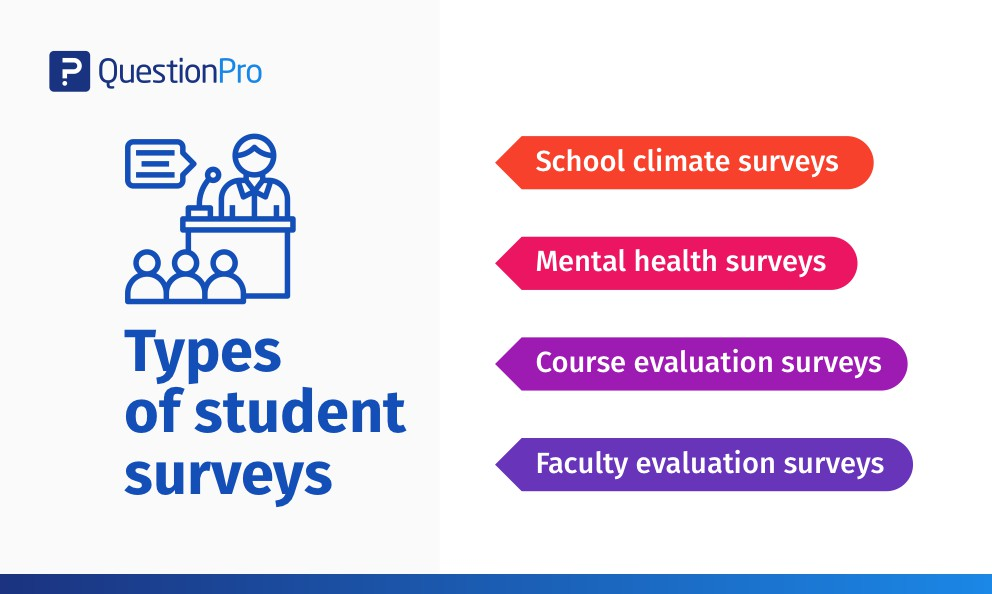

- Pandemic and crisis
- Short term solutions
- Long term solution
- In summary
Long-term solutions

Solution3
: Most immediately, governments must ensure that students who have fallen behind receive the support that they need to catch up to expected learning targets. The first step must be to carry out just-in-time assessments to identify these students and their support needs.

Solution4
: Given the significant financial strain that economies have been under during the pandemic, some countries may face government budget cuts that could jeopardize the gains that have been made in recent years in terms of access to education and improved learning outcomes. To ensure a resilient recovery, it is essential that the education budget is protected and that the schools that need financing the most are supported. To help the most vulnerable students, governments should prioritize directing much of the funding and resources to support schools to deliver remote instruction, particularly if those schools are serving high-poverty and high-minority populations. To encourage students to remain in school, incentives such as scholarships may need to be implemented. Yet learning recovery programs will not be feasible without substantial financial support. In the presence of budget cuts, affluent families will be able to continue to fund educational boosts like tutoring; however, lower-income families will not as easily be able to fill this gap.